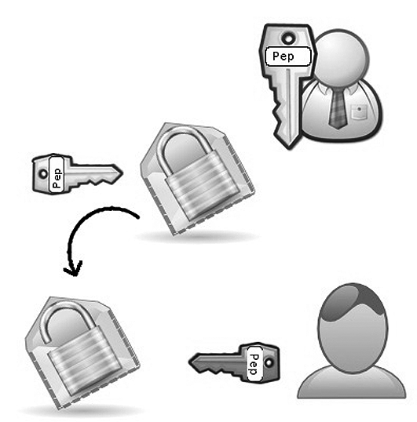

Gestió de servidors web
Amb l’evolució i l’accés lliure a Internet, un dels principals al·licients que han sorgit és la publicació de pàgines web on es poden emmagatzemar uns continguts força atractius per a nosaltres i que, alhora, poden ser consultats des d’arreu del món per tothom.
Val a dir que, amb la popularització d’Internet, tant empreses com usuaris han vist la necessitat d’establir un punt des d’on anunciar els seus productes, o bé, a títol particular, donar publicitat a les aficions o capacitats personals mitjançant la publicació de pàgines web.
Les pàgines web, en la seva majoria en format HTML, requereixen ser allotjades en màquines que disposin d’espai en disc per emmagatzemar arxius HTML, imatges, blocs de codi o arxius de vídeo en directoris específics i, alhora, han de ser capaces d’entendre tot tipus d’extensió dels arxius que són enviats en tots dos sentits de la comunicació.
Paral·lelament, no podem deixar de banda la importància de les mesures de seguretat davant dels perills existents a Internet. Perconseguir-ho, les pàgines hauran d’estar dissenyades considerant la incorporació de protocols de comunicació segurs com, per exemple, els desenvolupats amb el protocol segur de transferència d’hipertext (HTTPS, hypertext transfer protocol secure) que utilitzen claus i estratègies de xifrat pròpies de les eines del protocol de capa de connexió segura (SSL, secure sockets layer).
Les màquines que allotgen les pàgines web reben la categoria de servidors web. Des del punt de vista dels servidors, els requeriments més rellevants són l’espai de disc necessari per poder emmagatzemar l’estructura de la pàgina web i una bona connexió de xarxa perquè el consum de la unitat de processament central (CPU, central processing unit) sigui prou baix.
HTTPS
Protocol de xarxa basat en el protocol HTTP adreçat a la transferència segura de dades. Principalment, l’utilitzen les pàgines web d’entitats bancàries, botigues en línia i qualsevol altre servei que requereixi l’enviament de dades personals i contrasenyes.
El funcionament dels servidors web és especial ja que, com si es tractés d’una dent de serra, tenen consums de recursos puntuals perquè podem estar un temps sense peticions i, de cop i volta, tenir una allau de peticions. Això fa que els servidors web acostumin a tenir un nombre baix de processos en espera. A mesura que esdevenen necessaris, se’n van arrencant de nous.
Val a dir que no totes les peticions consumeixen el mateix, i, per exemple, aquelles pàgines web que executin programes d’interacció amb l’usuari o requereixin xifrat (HTTPS) consumeixen més recursos que altres pàgines web amb menys interacció.
Unitat de processament central (CPU)
És un component electrònic digital amb capacitat per interpretar instruccions de manera ordenada, processar dades i generar la informació requerida. Col·loquialment, es considera el cervell de l’ordinador.
El protocol HTTP
El protocol de transferència d’hipertext (HTTP, hyperText transfer protocol) és el motor que dóna vida a Internet, ja que és la base per a la web (www, world wide web).
- Representació d’una ona amb forma de dent de serra.
Des d’un punt de vista històric, la web fou creada l’any 1989 al Consell Europeu per la Recerca Nuclear (CERN, Centre Europeene pour la Recherche Nucleaire), amb seu a Ginebra, just a la frontera entre Suïssa i França. Val a dir que aquest organisme disposava (i disposa) d’una àmplia plantilla de científics de diferents països d’Europa que treballen en els seus acceleradors de partícules. En conseqüència, molts equips de treballadors estan integrats per membres de nacionalitats diferents. A més, molts dels experiments que s’hi fan destaquen per la seva complexitat i requereixen anys i anys de planificació i de construcció d’equipaments.
Fou arran de la necessitat de disposar de múltiples grups de científics repartits pel món i col·laborant entre ells (enviant-se informes, dibuixos, esquemes, fotos i tot tipus de documents) que va néixer la web.
És en els inicis del protocol HTTP, a mitjans de l’any 1990, quan trobem la versió 0.9. Aquesta versió tenia com a única finalitat transferir dades per Internet en forma de pàgines web escrites en llenguatge de marcatge d’hipertext (HTML, Hyper Text Markup Language). A partir de la versió 1.0 del protocol va sorgir la possibilitat de transferir missatges amb encapçalaments que descrivien el contingut dels missatges.
CERN
Es tracta del centre de recerca de física de partícules més gran del món. Té diversos acceleradors de partícules connectats entre ells que subministren tot tipus de partícules a nombrosos experiments. Fent recerca en els límits del coneixement, el CERN ajuda a fer grans progressos tecnològics.
El protocol de transferència d’hipertext (HTTP) és un protocol client-servidor força senzill que articula els intercanvis d’informació entre els clients web i els servidors HTTP. HTTP va ser desenvolupat pel consorci W3C i la IETF. Aquesta col·laboració va culminar l’any 1999 amb la publicació d’una sèrie de RFC, el més important dels quals va ser el RFC 2616, que especificava la versió 1.1.
Des del punt de vista de les comunicacions, està suportat en els serveis de connexió TCP/IP i funciona de la mateixa manera que la resta de serveis propis dels entorns UNIX.
Tècnicament, un procés servidor escolta en un port de comunicacions TCP (per defecte, el 80) i espera les sol·licituds de connexió dels clients web. Una vegada establerta la connexió, el protocol TCP s’encarrega de mantenir la comunicació i garantir un intercanvi de dades lliure d’errors.
El protocol de transferència d’hipertext es basa en operacions senzilles de sol·licitud/resposta. Quan un client estableix una connexió amb un servidor i envia un missatge amb les dades de la sol·licitud, el servidor respon amb un missatge similar, que conté l’estat de l’operació i el seu resultat possible. Totes les operacions poden adjuntar un objecte o recurs sobre el qual actuen; cada objecte web (document HTML, arxiu multimèdia o aplicació CGI) és conegut pel seu localitzador uniforme de recursos (URL, uniform resource locator). Els recursos poden ser arxius, el resultat de l’execució d’un programa, una consulta a una base de dades, la traducció automàtica d’un document, etc.
Interfície d’entrada comuna (CGI)
Tecnologia important de la xarxa (world wide web) que permet que un client (navegador web) sol·liciti dades d’un programa executat en un servidor web. Especifica un estàndard per transferir dades entre el client i el programa.
Localitzador uniforme de recursos (URL)
Generalment, la via de què disposa un usuari per accedir a una pàgina web o un objecte (arxiu) és mitjançant el seu localitzador uniforme de recursos (URL), que és una mena d’adreça que indica la localització exacta d’un document a Internet.
L’adreça que indica la localització exacta del document es compon del nom o l’adreça d’Internet (IP, Internet protocol) del servidor i el camí relatiu del document dins del servidor. També pot incloure altres aspectes com el port pel qual se sol·licita el servei (per defecte, s’assumeix que el 80 és per al protocol HTTP, el 21 per al protocol FTP, etc.) i un nom d’usuari i una contrasenya per a aquells documents que requereixin autenticació per accedir-hi.
HTTP és un protocol sense estat, és a dir, no guarda cap informació sobre connexions anteriors. El desenvolupament d’aplicacions web freqüentment necessita mantenir estat. Per això s’utilitzen les galetes (cookies), és a dir, la informació que un servidor pot emmagatzemar en el sistema client. Això permet que les aplicacions web institueixin la noció de “sessió”, i, alhora, permet rastrejar usuaris, ja que les galetes es poden emmagatzemar en el client durant un temps indeterminat.
Etapes d’una transició HTTP
Amb la intenció de conèixer amb més profunditat el protocol HTTP podem avaluar en què consisteix una transacció HTTP.
Cada cop que un client fa una petició a un servidor, s’executa un ventall d’etapes:
- Un usuari accedeix a una adreça d’Internet (URL) seleccionant un enllaç d’un document HTML o introduint-la directament a la barra de navegació d’un navegador web des de la perspectiva del client web.
- El client web descodifica l’adreça d’Internet (URL) separant-ne les diferents parts. És així com s’identifiquen el protocol d’accés, l’adreça del servidor de noms de domini (DNS, Domain Name Server) o d’Internet (IP) del servidor, el possible port opcional (el valor per defecte és el 80) i l’objecte del servidor requerit.
- S’obre una connexió TCP/IP amb el servidor cridant el port TCP corresponent. Es fa la petició. En conseqüència, s’envien l’ordre necessària (GET, POST, HEAD, etc.), l’adreça de l’objecte requerit (el contingut de l’adreça d’Internet del servidor), la versió del protocol HTTP utilitzada (en la major part de les ocasions és HTTP/1.0) i un conjunt variable d’informació que inclou dades sobre les capacitats del navegador web, dades opcionals per al servidor, etc.
- El servidor retorna la resposta al client. Aquesta resposta consisteix en un codi d’estat i el tipus de dada amb extensions multipropòsit de correu d’Internet (MIME, Multipurpose Internet Mail Extension) de la informació de tornada, seguit de la mateixa informació.
- Es tanca la connexió TCP.
Extensió MIME
El protocol HTML fou dissenyat per transportar per la xarxa arxius en format ASCII. Amb el progrés de les tecnologies i la inclusió de diferents tipus d’arxius en un format diferent a l’ASCII (imatges, vídeos, sons, etc.) en les aplicacions per Internet, va sorgir la necessitat de transformar aquests format a ASCII per la seva correcta recepció en el navegador web.
El 1992, es van crear els tipus MIME, que eren especificacions per donar format a missatges en un format diferent a l’ASCII perquè poguessin ser enviats i interpretats per Internet. Més endavant es van aplicar també als documents web.
Aquest procés es repeteix en cada accés que es faci al servidor HTTP. Per exemple, si es recull un document HTML que conté quatre imatges, el procés de transició mostrat amb anterioritat es repeteix cinc vegades, és a dir, una pel document HTML i quatre per les imatges.
L’estàndard HTTP/1.0
L’estàndard HTTP/1.0 recull, únicament, tres ordres que representen les operacions de recepció, enviament de la informació i revisió de l’estat.
- Comanda GET. S’utilitza per recollir qualsevol tipus d’informació del servidor. Sempre que premem sobre un enllaç o escrivim una adreça d’Internet a la barra de navegació d’un navegador web, estem utilitzant aquesta comanda. Com a resultat, el servidor HTTP envia el document corresponent a l’adreça d’Internet seleccionada o bé activa un mòdul CGI que, al seu torn, generarà la informació de tornada.
- Comanda HEAD. Sol·licita informació sobre un objecte (arxiu) com, per exemple, la seva grandària, el tipus, la data de modificació, etc. Acostuma a ser utilitzat pels gestors de memòries cau de pàgines o pels servidors intermediaris (proxy server) per conèixer quan cal actualitzar la còpia que es manté d’un arxiu determinat.
- Comanda POST. S’utilitza per enviar informació al servidor com, per exemple, les dades contingudes en un formulari. El servidor passarà aquesta informació a un procés encarregat del seu tractament (acostuma a ser una aplicació CGI). L’operació que es durà a terme amb la informació proporcionada dependrà de l’adreça d’Internet (URL) utilitzada, principalment, en els formularis.
Val a dir que un client web selecciona automàticament les ordres HTTP necessàries per recollir la informació per a l’usuari. Per tant, davant l’activació d’un enllaç, sempre s’executa una operació GET amb la finalitat de recollir el document corresponent.
Tal com mostra la figura, la comunicació entre el navegador i el servidor es duu a terme en dues etapes. D’una banda, el navegador fa una sol·licitud HTTP que, posteriorment, és processada pel servidor que, en conseqüència, envia una resposta HTTP.

Si avaluéssim amb deteniment la sol·licitud HTTP ens trobaríem amb un conjunt de línies de text que el navegador envia al servidor. D’una banda, trobaríem una línia de sol·licitud, és a dir, una línia que especifica el tipus de document sol·licitat, el mètode que s’aplicarà i la versió del protocol utilitzat. Aquesta línia estarà integrada per tres elements separats per un espai, és a dir, el mètode, l’adreça web i el protocol HTTP utilitzat pel client.
A continuació, trobaríem els camps de l’encapçalament de sol·licitud, és a dir, un conjunt de línies opcionals que permeten aportar informació addicional sobre la sol·licitud i/o el client (navegador, sistema operatiu, etc.). Cadascuna d’aquestes línies estarà formada per un nom que descriu el tipus d’encapçalament, seguit per dos punts (:) i pel valor de l’encapçalament.
Línia d’encapçalament HTTP
Camp fonamental que defineix gran part de la informació que s’intercanvia entre els clients i els servidors. Aquestes línies permeten l’enviament d’informació descriptiva en la transacció i faciliten, per exemple, l’autenticació o identificació dels usuaris.
Finalment, el cos de la sol·licitud és un conjunt de línies opcionals separades de les línies anteriors amb una línia en blanc. La seva finalitat és permetre que s’enviïn dades al servidor utilitzant un formulari durant la transmissió.
Un exemple de sol·licitud HTTP seria el següent:
GET http://www.municipi.cat HTTP/1.0 Accept : Text/html If-Modified-Since : Saturday, 19-May-2006 17:39:13 GMT User-Agent : Mozilla/6.0 (compatible; MSIE 5.0; Windows XP)
En conseqüència, la sol·licitud HTTP rebria una resposta HTTP, és a dir, un conjunt de línies que el servidor enviarà al navegador web. Com en el cas de la sol·licitud, la resposta HTTP conté alguns elements definitoris com, per exemple, una línia d’estat. Aquesta línia especifica la versió del protocol utilitzada i l’estat de la sol·licitud en procés mitjançant un text explicatiu i un codi.
En el cas dels camps de l’encapçalament de resposta, aquest és un conjunt de línies opcionals que permeten aportar informació addicional sobre la resposta i/o el servidor. Cadascuna d’aquestes línies es compon d’un nom que defineix el tipus d’encapçalament, seguit per dos punts (:) i pel valor de l’encapçalament.
En el cas del cos de la resposta, aquest conté el document sol·licitat. A tall d’exemple, a continuació es mostra un exemple d’una resposta HTTP:
HTTP/1.0 200 OK Date: 19 May 2006 17:40:12 GMT Server : Microsoft-IIS/2.0 Content-Type : text/HTML Content-Length : 1245 Last-Modified : 11 May 2006 08:29:13 GMT
Pel que fa als codis de resposta, aquests són els codis que es veuen quan el navegador no pot mostrar la pàgina web sol·licitada. La sintaxi d’una resposta HTTP és una línia d’estat i té una estructura fixa on s’indica la ersió, el codi de l’error i un text explicatiu.
Els possibles codis d’estat s’identifiquen amb números de tres xifres i es classifiquen en cinc grups segons si són informatius (1xx), d’èxit en la sol·licitud (2xx), per tornar a adreçar la sol·licitud (3xx), per un error generat en el client (4xx) o bé per errors generats en el servidor (5xx).
Les respostes més típiques són els codis 200 per indicar la confirmació de la petició i el 404 per indicar que l’objecte sol·licitat no es troba disponible. De fet, tal como mostra la figura, l’error 404 és aquell error en què el servidor no ha trobat res a l’adreça web especificada ni cap adreça preestablerta on adreçar les possibles sol·licituds.
El servidor Apache
A principis de 1995, el servidor web més popular era un servidor desenvolupat pel Centre Nacional d’Aplicacions per a Supercomputadors (NCSA, National Center for Supercomputing Applications) de la Universitat d’Illinois. De fet, històricament, la investigació en el camp de la informàtica i les telecomunicacions per part d’aquest centre universitari nordamericà va contribuir, en gran mesura, al desenvolupament de la teranyina d’abast mundial (WWW).
Cal destacar que el desenvolupament del servidor web per part del NCSA va quedar en punt mort durant l’any 1994 perquè el seu principal desenvolupador, Rob McCool, va marxar. Això va comportar que diversos grups de desenvolupadors de llocs web es coordinessin per assumir, prenent com a base el servidor NCSA 1.3, el desenvolupament del projecte i introduir i desenvolupar millores importants. Aquesta coordinació (mitjançant l’intercanvi de correus electrònics) va fer que, progressivament, sorgissin millores en forma de pegats.
Supercomputador
Es tracta d’un ordinador amb una de les capacitats de processament més elevades del món, concretament, la seva capacitat de càlcul. A Barcelona hi ha instal·lat el supercomputador Marenostrum.
Arribats a aquest punt, hem de destacar els desenvolupadors Cliff Skolnick i Brian Behlendorf, ja que van establir una llista de correus com a espai per compartir informació i un servidor d’arxius on els desenvolupadors podien penjar el resultat dels seus esforços. Tot aquest còmput d’esforços va fer que un grup de 8 programadors fundés el grup Apache. A mitjan 1995, es fa fer pública la primera versió oficial del servidor Apache (la 0.6.2).
Origen del nom Apache
Hi ha dues explicacions sobre l’origen del nom del projecte. D’acord amb el que exposa la Fundació Apache, el nom fou triat com a homenatge a la tribu nativa nord-americana apache coneguda, històricament, per la seva resistència i les seves habilitats al camp de batalla.
Posteriorment, un dels desenvolupadors originals del servidor Apache va exposar que el nom provenia de les característiques del desenvolupament del servidor. De fet, partint de la paraula ‘pegat’ en anglès (patch) i, considerant que durant el desenvolupament del programari es van enviar moltes revisions i millores, el grup de desenvolupadors va decidir el nom per al que ells consideraven un “servidor web apedaçat” (“a patchy web server”).
Amb l’oficialització de la primera versió pública del servidor Apache, el seu desenvolupament va continuar per dues vies paral·leles. D’una banda, alguns treballadors van continuar centrant els seus esforços en el desenvolupament de millores del servidor amb la intenció d’arribar a la sèrie 0.7. De l’altra, un altre grup va tornar a escriure tot el codi de la primera versió per acabar creant una arquitectura nova de tipus modular –en un servidor modular, al nucli només hi ha les funcionalitats bàsiques. Fou al juliol de 1995 quan es va optar per migrar tota la feina feta en el desenvolupament de l’Apache 0.7 a aquesta arquitectura nova. Aquesta decisió va comportar el sorgiment de l’Apache 0.8.

Posteriorment, durant el mes de desembre de 1995, va aparèixer l’Apache 1.0, que incloïa un volum important de documentació i moltes millores en forma de mòduls per ser incorporades al servidor web.
El 1999, davant de l’espectacular acollida del programari Apache, els membres del grup Apache van establir la Fundació del Programari Apache, que s’encarrega de donar suport de tipus legal i econòmic al desenvolupament del servidor Apache i de tots aquells projectes relacionats.
L’Apache va ser un projecte que va atreure molta gent pel gran interès de la seva fita, que és aconseguir el servidor web més ràpid, més eficient i amb més funcionalitat sempre sota l’enfocament de la distribució lliure, regit per la llicència GNU (general public license).
El servidor HTTP Apache ...
… és un servidor de programari lliure per a sistemes de tipus Unix, Microsoft Windows i altres plataformes. L’última versió estable (2.0) ha estat creada de nou des de l’inici i no conté codi original de l’antic NCSA HTTPd.
Tal com mostra la figura, l’empresa anglesa especialitzada en serveis d’Internet Netcraft publica anualment un estudi en què el servidor Apache apareix com el servidor web més utilitzat arreu del món.
L’Apache és un servidor web flexible, ràpid i eficient, contínuament actualitzat i adaptat als nous protocols HTTP/1.1. De la gran quantitat de característiques destaquen:
- És multiplataforma.
- Segueix els protocols estàndard internacionals.
- És modular, és a dir, es pot adaptar a diferents entorns i necessitats que poden activar només aquelles parts que són necessàries. També disposa d’una interfície de programació d’aplicacions (API, application programming interface) de mòduls que permet que els usuaris puguin programar els seus propis mòduls específics.
- Es desenvolupa de manera oberta i es retroalimenta d’idees noves, registres (logs) d’errades i pegats per a la resolució dels problemes que vagin sorgint.
- És extensible, ja que gràcies a la seva característica modular s’han desenvolupat diverses extensions com, per exemple, les de programació (PHP, Python, Java, Perl, etc.), que es corresponen amb un llenguatge de programació que treballa simultàniament amb el servidor i que permeten connectar amb múltiples bases de dades (Oracle, MySQL, PostgreSQL, Adabas, etc.).
Programari multiplataforma
És aquell en què es disposa de versions per a diferents sistemes operatius (Windows, GNU/Linux, mac, etc.).
Avui en dia hi ha diferents versions del servidor web d’Apache que s’estan mantenint i millorant (1.3, 2.0 i 2.2), ja que ofereixen característiques noves per adaptar-se a totes les necessitats noves que van sorgint.
API
Una interfície de programació d’aplicacions és un conjunt de declaracions que defineix el contracte d’un component informàtic amb qui farà ús dels seus serveis.
Finalment, tal com mostra la figura, és important destacar que, tot i que Apache ha estat, des de fa molts anys, el dominant absolut dels servidors d’Internet, des d’un temps ençà la distància entre els servidors web Apache i els servidors de serveis d’informació d’Internet (IIS, Internet information server) que proporciona Microsoft per a totes les seves distribucions per servidors ha esdevingut progressivament menor.
Per explicar la reducció en el distanciament entre tots dos servidors web, ens hem de centrar en l’evolució de la xarxa d’Internet i els seus usuaris. D’una banda, Microsoft va adquirir diferents proveïdors d’hostatge (hosting) perquè tots els dominis que no disposaven de pàgina web mostressin una pàgina predefinida i proporcionada per un servidor de serveis d’informació d’Internet (IIS). Això va comportar un augment important del nombre de dominis que utilitzaven el servidor de Microsoft.
Microsoft
Empresa multinacional nordamericana creada l’any 1975 per Bill Gates i Paul Allen. Microsoft (acrònim de Microprocessor Software) és la creadora del popular sistema operatiu MS Windows.
- Google Inc. És una corporació pública nord-americana propietària de la marca Google i que té com a producte principal el motor de cerca amb el mateix nom.
Posteriorment, l’empresa Google va decidir utilitzar un servidor web propi en detriment del servidor web Apache que estaven utilitzant fins aquell moment. A tot això, cal afegir que el nombre de blocs en pàgines web que proporcionen espais i plantilles predefinits per fer-ho juntament amb espais web on crear una mena d’aparador personal (per exemple, www.myspace.com) estan en creixement constant i estan guanyant terreny. Considerant que tots aquests dominis no utilitzen Apache, la quota es va reduint progressivament i, per tant, l’hegemonia del servidor web Apache no és la mateixa que anys enrere.
-

- MySpace és un lloc web d’interacció social integrat per perfils personals d’usuaris.
Configuració bàsica del servidor web Apache
Apache és un dels servidors web més estesos a Internet tant per la seva fiabilitat i seguretat com per la seva condició de gratuïtat. Part de la seva popularitat es basa en la possibilitat de modificar les principals directives de configuració, ja que totes les opcions i directives d’Apache es troben en un arxiu (httpd.conf).
Serà dins de l’arxiu de configuració principal on haurem de configurar els valors necessaris per obtenir els resultats que s’adaptin millor a les nostres necessitats. Des del punt de vista del sistema operatiu Windows, la configuració del servidor web Apache es troba a l’arxiu “C:\Arxius de Programa\Apache Group\Apache2\conf\httpd.conf”.
En l’arxiu httpd.conf podem trobar, per exemple, el contingut següent:
Les conexions KeepAlive
Són les connexions que es mantenen obertes després de rebre una petició del client i servir-la; és així com la petició següent podrà aprofitar la connexió i, en conseqüència, no haurà d’obrir una connexió per a cada element de la pàgina (imatges, css, etc.).
Un valor de 15 segons per al paràmetre KeepAlive és elevat, ja que poques vegades una pàgina web trigarà tant de temps a ser carregada. Si aquest valor és elevat farem que s’ompli de connexions d’Apache que no s’utilitzen.
Paràmetre timeout
Permet indicar el nombre de segons abans que es cancel·li una connexió per falta de resposta. El valor per defecte és de 300 segons.
Val a dir que, per treballar amb l’arxiu httpd.conf, haurem de crear una còpia de l’arxiu que desarem en una carpeta diferent i, opcionalment, com a nom d’arxiu podem introduir la data actual com, per exemple, 07072009httpd.conf.
Dins de l’arxiu de configuració principal del servidor web Apache, hem de conèixer amb profunditat els paràmetres principals que l’integren i que, alhora, ens permetran ajustar el funcionament del nostre servidor web.
- Paràmetre
DocumentRoot. Aquest paràmetre permet modificar la carpeta on es troben ubicades les nostres pàgines web i des d’on se serviran els fitxers. Per exemple, des del punt de vista del sistema operatiu Windows, dins de l’arxiu de configuració principal trobaríemDocumentRoot “D:\webs”i, en el cas de Linux,DocumentRoot /var/www/. - Paràmetre
ServerRoot. Aquest paràmetre permet definir en quin lloc es troba la configuració del servidor. Normalment tindrà els directorisconfilogs. En el cas del sistema operatiu Linux seria, per exemple,ServerRoot /etc/httpd. - Paràmetre
DirectoryIndex. Quan un navegador visita una pàgina web, el primer que fa el servidor és retornar l’arxiu indicat aDirectoryIndexque, per defecte, acostuma a ser index.html.
En el cas que volguéssim modificar el nom de l’arxiu per defecte per paginainici.html hem de fer el canviDirectoryIndex paginainici.html - Paràmetre
Listen. Quan un navegador visita una pàgina web acostuma a utilitzar, per defecte, el port 80. De fet, si visitem la pàgina www.google.cat és com si estiguéssim visitant la pàgina www.google.cat:80.
Per canviar el port a través del qual el servidor web Apache està esperant peticions (per exemple, pel port52123) hauríem de modificar el paràmetre, (en aquest casListen 52123). Un cop fet el canvi, quan visitem el servidor web haurem d’escriure l’adreça i el port (http://localhost:52123).
Val a dir que, tot i que per defecte el port utilitzat serà el 80, en podem escoltar d’altres, senzillament, especificant-los. Per exemple, per definir que el servidor escolti el port 80 i el 8080 introduiríem:
També podríem definir quins són els dispositius de xarxa que escoltarem:
- Paràmetre
<Directory “..”> …. </Directory>. El paràmetreDirectorypermet configurar permisos en els diferents directoris del nostre espai web. Es tracta d’una directriu que es fa servir per definir característiques que només s’aplicaran al directori especificat i no a tot el servidor (per això s’ha de tancar).
Aquests permisos serien els següents:- Options
Indexes. Si dins de la carpeta no hi ha cap arxiu igual que el que hem definit al paràmetreDirectoryIndexal navegador es mostrarà un índex amb tots els arxius de la carpeta actual.FollowSymLinks. El servidor seguirà els enllaços simbòlics (lògics), és a dir, els àlies.
Deny from all, Deny from 192.168.1.50. Denega la petició a una carpeta, un arxiu o una adreça d’Internet.Allow from all, Allow from 192.168.1.50. Permet la petició a una carpeta, un arxiu o una adreça d’Internet.
A tall d’exemple, podríem trobar el següent:- Volem permetre que en el directori (
DocumentRoot) es puguin seguir àlies.- <DIRECTORY "D:\PAGSWEBS">
- Options FollowSymLinks
- Allow from all
- </DIRECTORY>
- Volem permetre que en el directori arrel (
DocumentRoot) es pugui seguir àlies i mostrar un llistat del directori en el cas que no es localitzi l’arxiu indicat aDirectoryIndex.- <DIRECTORY "D:\PAGSWEBS">
- Options Indexes FollowSymLinks
- Allow from all
- </DIRECTORY>
- Volem permetre que només l’adreça d’Internet 192.168.1.2 pugui accedir a la carpeta
admin.- <DIRECTORY "D:\PAGSWEBS\admin">
- Deny from all
- Allow from 192.168.1.2
- </DIRECTORY>
- Volem prohibir l’accés a la carpeta
secrets.- <DIRECTORY "D:\PAGSWEBS\secrets">
- Deny from all
- </DIRECTORY>
- Paràmetre
<Files “..”> …. </Files>. El paràmetreFilespermet configurar permisos en els diferents arxius del nostre espai web. Val a dir que el paràmetreFilesha d’estar inclòs dintre del paràmetreDirectory.
Aquests permisos serien els següents:Deny from all, Deny from 192.168.1.50. Denega la petició a un arxiu o una adreça d’Internet.Allow from all, Allow from 192.168.1.50. Permet la petició a un arxiu o una adreça de Internet.
A tall d’exemple, podríem trobar el següent:- Volem prohibir l’accés a arxius amb format
JPGdintre de la carpetaarxiusimportants.- <DIRECTORY "D:\PAGSWEBS\arxiusimportants">
- <Files *.jpg>
- Deny from all
- </Files>
- Allow from all
- </DIRECTORY>
- Paràmetre
Alias. El paràmetreAliaspermet carpetes lògiques, és a dir, carpetes ubicades en un directori diferent a l’assignat dins del paràmetreDocumentRoot.
Per exemple, si definíssimAlias /nohisoc “D:\PAGSWEBS2”, quan accedíssim a l’adreça http://localhost/nohisoc, realment, estaríem accedint a la carpetaD:\PAGSWEBS2. En aquest cas, hauríem de tenir l’opcióOptions followsymlinksactivada en el directoriDocumentRoot. - Paràmetre
<virtualhost>…</virtualhost>. El paràmetrevirtualhostpermet configurar més d’un lloc web en un mateix servidor, és a dir, una mateixa adreça d’Internet per a diferents noms de domini. Val a dir que, si volem utilitzar aquest paràmetre, cal haver configurat el servidor de noms de domini (DNS) perquè adreci els noms de domini cap al nostre servidor web Apache.
A tall d’exemple, des del punt de vista del sistema operatiu Windows, podríem definir que es permetessin llocs web virtuals (virtual hosts) mitjançant el port 80 (figura).
Considerant la idiosincràsia del sistema operatiu Linux, és important que,
arribats a aquest punt, avaluem els elements principals (arxius i directoris) que defineixen la configuració del servidor web Apache, ja que els haurem de tenir en compte a l’hora d’establir l’hostatge de llocs web virtuals
(virtual hosting).
Paràmetre alias
Permet introduir directoris que estan fora de l’arrel del servidor perquè siguin accessibles com si fossin dins. Per exemple, Alias / alegre “/var/alegre” faria que accedíssim a /var/alegre especificant el directori darrere del nom del servidor (www.patata.cat/alegre7).
/etc/apache2/apache2.conf. Es tracta de l’arxiu de configuració principal del servidor. Mitjançant directives s’inclouen els mòduls necessaris i la resta de la configuració dels arxius de configuració./etc/apache2/httpd.conf. Aquest arxiu es manté per raons de comptabilitat amb la primera versió d’Apache. A més, es recomana que la configuració dels mòduls de tercers vagin dins d’aquest arxiu./etc/apache2/sites-available. Es tracta del directori on hi ha els arxius de configuració dels diferents llocs virtuals. L’arxiu per defecte (default) conté la configuració del lloc per defecte./etc/apache2/sites-enabled. És un directori on hi ha enllaços simbòlics als arxius de configuració dels llocs virtuals (en el directori/etc/apache2/sites-available) que es troben actius./etc/apache2/ports.conf. És l’arxiu de configuració on s’indica el port pel qual el servidor escolta (per defecte, el 80)./etc/apache2/mods-avalaiblei/etc/apache2/mods-enabled. Arxius de configuració dels mòduls d’Apache, principalment en el cas de la instal·lació del programari PHP.
En els arxius de configuració, les línies que comencen amb el símbol # són comentaris i el servidor no els considera. La configuració del servidor defineix un lloc virtual per defecte que, com a directori de treball, és /var/www.
De fet, per comprovar que hem instal·lat correctament el servidor, introduirem dins de la barra de navegació d’un navegador web la cadena de text http://localhost. A continuació, es visualitzarà la pàgina web desada
en el directori /var/www/apache2-default3.
Per últim, hem de destacar que el servidor web Apache utilitza dos arxius de registre anomenats access.log i error.log que es troben desats en la carpeta /var/log/apache2.
És en l’arxiu /var/log/apache2/access.log on Apache va registrant tots els accessos que els ordinadors fan al servidor web i en cada línia d’aquest arxiu va desant l’adreça IP, la data i l’hora, l’HTTP enviada pel client, l’adreça d’Internet sol·licitada i la versió del navegador i el sistema operatiu.
Analitzant amb deteniment aquest arxiu, podem veure quants cops s’ha descarregat una pàgina o un arxiu o bé les adreces IP més actives. Aquest arxiu de registre és utilitzat pels programes que presenten estadístiques d’accés al servidor web, com per exemple Awstats.
És en l’arxiu /var/log/apache2/error.log on Apache registra totes les incidències o els errors que es van produint com, per exemple, quan un client sol·licita una pàgina inexistent o quan un client prova d’entrar en una carpeta prohibida o protegida. Per exemple, si estem configurant alguna cosa en Apache (carpetes privades, carpetes segures, servidors web virtuals, àlies, etc.) i no funciona, una molt bona opció és fer proves i examinar l’arxiu error.log, ja que ens proporcionarà un ampli ventall de pistes per trobar la solució al nostre problema.
Per tant, des del punt de vista del sistema operatiu Linux, si volem veure les últimes 20 línies de l’arxiu access.log per conèixer qui hi està accedint, com a administradors, haurem d’escriure i executar la línia següent:
Instal·lació i configuració del servidor web Apache per a Windows
Un servidor web (Apache2) és una aplicació que interactua amb Internet igual que un navegador web. Per exemple, quan el navegador carrega una pàgina envia una petició a la web i aquesta li respon amb un HTML/imatge/arxiu que el navegador mostra per pantalla. En aquest cas, el servidor seria la web, ja que és la que rep la petició i qui envia l’arxiu sol·licitat.
Per dur a terme la instal·lació del servidor web Apache haurem d’adreçarnos a la pàgina web httpd.apache.org/download.cgi, des d’on podrem descarregar la versió actualitzada del servidor web. En el nostre cas, la distribució que escollirem serà el paquet d’instal·lació de Microsoft (MSI, Microsoft Installer), ja que agilitzarà, en gran mesura, els passos que cal seguir (figura).
Un cop haguem descarregat l’arxiu, haurem de fer clic dues vegades sobre l’arxiu en qüestió per donar inici al procés d’instal·lació. Tal com mostra la figura, apareixerà una petita interfície gràfica relacionada amb el programari i amb la seva llicència.
Dins del procés d’instal·lació del programari, arribarem a un punt en què haurem de definir una part dels paràmetres principals del servidor web (figura).
Tot i que dins de la casella del nom de domini de la xarxa (network domain) tenim diverses opcions per triar, moltes vegades instal·larem el servidor per utilitzar-lo en la comprovació del funcionament correcte de les pàgines web que dissenyem. En aquest cas, escriuríem localhost. Ara bé, si volem utilitzar el servidor web per atorgar-li una projecció (i una funció) pública, haurem d’introduir la nostra adreça d’Internet (IP).
D’altra banda, el nom del servidor (server name) és el nom que volem que el nostre servidor web tingui. Paral·lelament, dins de la casella del correu electrònic (administrator’s email address) introduirem l’adreça de l’administrador del servidor web.
Finalment, trobem dues opcions. L’opció For all users in port 80, as a service ens permetrà indicar que Apache s’instal·li com un servidor de Windows, és a dir, que s’executi amb l’arrencada de l’ordinador. Si escollim aquesta opció, el servidor escoltarà pel port 80.
En el cas d’escollir l’opció Only for the current user, on port 8080, when started manually, el servidor Apache s’instal·larà com un programa normal, és a dir, per executar-lo haurem d’escollir-lo mitjançant el menú d’inici de la interfície gràfica del sistema operatiu.
Tal com mostra la figura, un cop haguem definit tots aquests paràmetres, el procés d’instal·lació ens plantejarà si volem optar per fer la instal·lació estàndard o la personalitzada, és a dir, haurem d’escollir els elements que s’han d’instal·lar. A continuació, el procés d’instal·lació buscarà confirmar la carpeta on desar els diferents arxius del servidor web.
Arribats a aquest punt, és important destacar que, en el cas que vulguem canviar el directori on instal·lar el programari, podrem definir una carpeta de destinació nova. A continuació, apareixerà una finestra de confirmació que donarà inici a la instal·lació del programari Apache. Finalment, un cop finalitzat el procés, apareixerà una altra finestra amb la qual se sol·licita la finalització (i enllestiment) de la instal·lació del nostre servidor web.
Un cop ja tinguem el nostre servidor web Apache instal·lat, ja podrem comprovar que, efectivament, la instal·lació s’ha fet correctament. Per comprovar-ho, podem arrencar el servidor (Inici → Tots els programes → Apache http Server 2.2 → Control Apache Server → Start).
Un cop arrencat el servidor, ja podrem adreçar-nos al navegador web i,
dins de la barra de navegació, escriure “http://localhost” o http://127.0.0.1/. Ja podrem visualitzar la pàgina de prova d’Apache (figura).
Adreça IP 127.0.0.1 (loopback)
Interfície de xarxa virtual que sempre representa el mateix dispositiu, independentment de l’adreça IP que se li hagi assignat.
Per arrencar o aturar el servidor podem adreçar-nos al menú Inici (Inici → Tots els programes → Apache http Server 2.2 → Control Apache Server → Start/Stop) des del gestor de serveis de Windows, o bé des de la línia d’ordres DOS.
En la figura es pot observar que, en tots dos casos, dins de la barra de tasques al costat del rellotge apareixerà una icona (el logotip d’Apache) amb el qual, en fer-hi clic, podrem accedir a l’administració del servidor web Apache. Quan obrim el monitor d’Apache, podrem arrencar, aturar o reiniciar el servei.
Val a dir que totes aquestes accions també les podrem dur a terme accedint al gestor de serveis de Windows mitjançant el Tauler de control → Eines d’administració → Serveis. Un cop dins, ens haurem d’ubicar sobre el nom del servei (Apache2.2) i fent-hi clic amb el botó dret del ratolí podrem arrencar el servei (sempre i quan haguem instal·lat Apache com un servei de Windows).
Instal·lació i configuració del servidor web Apache per a Linux
El programari Apache s’utilitza, principalment, per servir continguts estàtics i pàgines web dinàmiques presents en la teranyina d’abast mundial (WWW).
Hi ha moltes aplicacions web que han estat dissenyades mitjançant l’entorn i les funcionalitats que ofereix el programari Apache. Hem de destacar, a més, que Apache s’acostuma a utilitzar en aquelles tasques en què es requereix que els continguts estiguin disponibles de manera segura com, per exemple, en la compartició d’arxius desats en un ordinador connectat a Internet. Cal destacar, a més, que els programadors que desenvolupen aplicacions web acostumen a utilitzar una versió d’Apache instal·lada localment per assajar i comprovar el comportament del codi de l’aplicació a mesura que vagi sent desenvolupat.
A l’hora de fer la instal·lació del servidor web, hem de considerar que, normalment, la major part de les distribucions de Linux té en els seus repositoris una versió actualitzada d’Apache. Per tant, ens podem adreçar a la pàgina web oficial per descarregar-lo o bé podem executar-ne la descàrrega i la instal·lació des del terminal d’ordres mitjançant la interfície d’usuari APT.
Repositori
Lloc centralitzat on es desen i es mantenen paquets de programari, habitualment, en bases de dades o arxius informàtics.
Eina avançada d’empaquetatge (APT)
L’APT (Advanced Packaging Tool) és la interfície d’usuari del sistema d’administració de paquets utilitzat pel sistema operatiu Debian GNU/Linux i els seus derivats. L’APT simplifica el procés d’administració mitjançant l’automatització de la instal·lació, configuració i actualització dels paquets de programari.
Per certificar que la instal·lació s’ha dut a terme correctament, haurem d’obrir un navegador web i, dins de la barra de navegació, escriurem http://localhost. Si el servidor s’ha instal·lat correctament, el navegador ens mostrarà la pàgina web per defecte (figura).
El servidor web Apache2 disposa de dos arxius (scripts) d’arrencada i aturada dins de la carpeta /etc/init.d. Per tant, si volem arrencar (o tornar a arrencar) el servidor web Apache2, haurem d’escriure i executar
la línia d’ordres /etc/init.d/apache2 restart. En el cas que vulguem aturar el servidor, haurem d’escriure i executar la línia d’ordres /etc/init.d/apache2 stop.
Un cop finalitzada la instal·lació d’Apache 2.0, ja en podem treure algunes conclusions. En primer lloc, podem afirmar que utilitza un disseny modular (basat en mòduls) que s’utilitza en moltes de les funcions bàsiques del servidor web.
D’altra banda, tal com mostra el procés d’instal·lació, s’ha instal·lat per defecte el paquet “apache2-mpm-worker”. Aquest paquet proporciona una versió molt més àgil i ràpida del servidor. De fet, els mòduls de multiprocessament (MPM, multi-processing modules) són els responsables de connectar amb els ports de xarxa de la màquina, acceptar les peticions i gestionar les respostes corresponents. En el cas dels servidors web, el port de funcionament estàndard és el 80.
Port de xarxa
És una interfície utilitzada per comunicar-se amb un programa a través d’una xarxa. Acostumen a estar numerats i una determinada implementació de protocol de transmissió de xarxa (per exemple, TCP o UDP) assigna algun d’aquests números a la informació que envia; per exemple, el programari de correu electrònic utilitza el port 25.
Val a dir que dins del procés d’instal·lació per defecte del servidor web Apache també hi ha la instal·lació del mòdul de directori d’usuari (userdir), ja que cada usuari disposarà d’un espai en el seu espai de disc (home) per crear i desar les seves pròpies pàgines web.
Amb tot, si bé hi ha un ampli ventall de paquets que s’han d’instal·lar amb Apache per augmentar-ne l’ eficiència, cal no deixar de banda la descàrrega de la documentació del programari, ja que esdevindrà de gran utilitat per a l’administrador.
Considerant que, en el cas que haguem instal·lat la documentació, haurem de tornar a arrencar el servidor web, també podem accedir a la documentació mitjançant la pàgina principal predefinida en el servidor web Apache. Per tant, des de qualsevol navegador web ens podrem documentar sobre el funcionament del servidor web escrivint en la barra de navegació http://localhost/manual/.
Awstats. Obtenció d’estadístiques
L’Awstats és una eina de programari lliure que permet obtenir informes d’anàlisis web adequada per analitzar dades de serveis d’Internet com un servidor web, de correu electrònic o bé de transferència d’arxius.
A grans trets, l’Awstats analitza els arxius de registre del servidor i, en conseqüència, produeix informes HTML. De fet, tot i que les dades que es presenten es mostren en forma de taules i gràfics de barres, també es poden crear informes estàtics mitjançant una interfície de línia d’ordres i, alhora, es poden obtenir informes sota demanda mitjançant un navegador web.
Per tant, amb la finalitat d’instal·lar el programari, hem de ser conscients que disposem d’un paquet en els repositoris d’Ubuntu per descarregar i instal·lar l’Awstats. Per tant, haurem d’escriure i executar la línia següent:
Un cop instal·lat el programari, pot ser interessant accedir a la documentació per conèixer com obtenir el màxim rendiment del programari. En aquest cas, tant podem accedir a l’adreça file:///usr/share/doc/awstats/html/index.html, com escriure i executar la línia següent:
Per començar a utilitzar Awstats cal configurar-lo. En aquest cas, haurem d’escriure i executar la línia d’ordres següent:
Val a dir que, tot i que podem editar directament els fitxers awstats.conf o awstats.conf.local, una molt bona opció és crear un arxiu nou per a cada domini l’accés del qual vulguem monitoritzar. Per exemple, si volem monitoritzar el domini elmeudomini.com, haurem d’escriure i executar el següent:
Arribats a aquest punt, amb la intenció de modificar l’arxiu per adaptar-ne la configuració, hauríem de recórrer a l’editor de text per línia d’ordres joe.
Un cop assolides totes aquestes etapes, ja podrem executar per primer cop el programari Awstats perquè processi els arxius de registre.
Val a dir que allò que posem en el paràmetre config depèn del nom de
l’arxiu de configuració (és el que hi ha entre awstats. i .conf). Per consultar les estadístiques hem de cridar el CGI awstats.pl, invocant el paràmetre config amb el valor del nostre domini. Un possible exemple d’accés seria el següent:
http://www.elmeudomini.com/awstats/ awstats.pl?config=elmeudomini.com
Configuració de la seguretat
Un dels elements que caracteritzen i fan que Apache esdevingui molt potent són els arxius de configuració per usuaris i, alhora, la restricció de l’accés a continguts.
De fet, des del punt de vista d’Apache, els mòduls encarregats del control d’accés són el mod_auth, que gestiona el control d’accés per usuaris i el mod_access, que conté les directives Allow, Deny i Access. Tot i que aquests mòduls acostumen a estar activats per defecte, hi ha diferents maneres de controlar l’accés a continguts (usuari i contrasenya, adreça d’Internet d’origen, etc.).
Per tant, si volem posar un control d’accés amb usuari i contrasenya per a les pàgines personals de l’usuari Bernat (suposant que existeixi el directori /home/bernat/public-html amb drets d’accés per Apache), haurem de generar l’arxiu ocult específic per a aquest directori que contindrà la informació relacionada amb l’usuari i la contrasenya escrivint i executant la utilitat d’Apache següent:
Si a més a més de l’usuari Bernat, volem que altres usuaris també hi tinguin accés, escriurem i executarem la mateixa ordre però sense l’opció –c, ja que aquesta opció indica que és el primer i que, per tant, volem crear l’arxiu .bernat-passwd.
Arribats a aquest punt, haurem de crear un arxiu anomenat .htaccess amb els paràmetres adients i el desarem dins del directori físic que correspongui a l’adreça d’Internet (en el cas del nostre exemple, /home/bernat/public-html). El contingut de l’arxiu seria el següent:
En aquest cas, el paràmetre AuthType indica el tipus d’autentificació que utilitzaran els navegadors. D’altra banda, el paràmetre AuthUserFile indica l’arxiu que el servidor web Apache ha de consultar per validar els usuaris que intentin accedir a l’espai de l’usuari Bernat. El paràmetre AuthName indica el nom de la “zona” a la qual pertany aquesta autentificació (espai web de l’usuari Bernat i els seus amics). Finalment, el paràmetre require indica quin tipus d’actuació cal fer per obtenir l’accés. En aquest cas, hem d’introduir el nom i la contrasenya d’un usuari vàlid (valid user). Quan accedim des dels navegadors web, apareixerà una finestra sol·licitant el nom d’usuari i la contrasenya.
HTTPS. Pàgines web segures
Un lloc web segur és un lloc web que utilitza el protocol HTTPS en lloc del protocol HTTP. De fet, el protocol HTTPS és idèntic al protocol HTTP amb l’excepció que la transferència d’informació entre el client (navegador web) i el servidor (servidor web) viatja per la xarxa d’Internet xifrada a partir d’uns complexos algoritmes de xifrat de dades proporcionats pel paquet OpenSSL.
OpenSSL
Es tracta d’un projecte de programari desenvolupat pels membres de la comunitat Open Source. És un paquet robust d’eines d’administració i llibreries relacionades amb la criptografia que proporcionen funcions criptogràfiques a navegadors web per facilitar l’accés segur a llocs HTTPS.
Aquestes eines ajuden el sistema a implementar tot un ventall de protocols relacionats amb la seguretat.
- 
- El concepte de xifrat simètric es refereix al fet que per xifrar i desxifrar s’utilitza la mateixa clau.
Els algoritmes de xifrat utilitzats reuneixen les característiques necessàries per garantir que la informació que surt del servidor cap al client estigui xifrada i que només pugui ser desxifrada pel client, i que la informació que surt del client cap al servidor estigui xifrada i només pugui ser desxifrada pel servidor.
Per exemple, en el cas que durant la transferència de la informació un pirata informàtic fes una còpia dels paquets de dades i intentés desxifrarlos, els algoritmes garantirien que ho hagués de fer mitjançant la força bruta (és a dir, provant totes les claus possibles) en un termini mínim d’uns quants anys.
Durant la transmissió, s’utilitzaran algoritmes de xifrat simètrics, però, amb la finalitat d’intercanviar les claus de xifrat, hi ha una sessió inicial de xifrat asimètric.
Xifrat asimètric
Procés de xifrat de complexitat alta basat en la utilització de dues claus, una de pública i una de privada. Tothom, sense cap mena d’excepció, pot conèixer la clau pública. Per contra, la clau privada només l’ha de conèixer el seu propietari.
Servidors virtuals
Durant els últims anys, el terme virtualització (com en el cas del concepte orientació a objectes) ha arrelat en múltiples entorns tecnològics. Des del punt de vista de la informàtica, la definició més genèrica (o usual) per a virtualització fa referència a la instal·lació d’un sistema operatiu que actua com a hoste sobre un altre sistema que actua com a amfitrió. Aquesta cohabitació ens permetrà disposar de diverses màquines virtuals sobre una única màquina física.
Orientació a objectes
Es tracta d’un paradigma de programació en el qual tot es basa en objectes. Un objecte és un tipus abstracte de dades que encapsula (amaga) tant les dades necessàries com les funcions per accedir-hi.
Tècnicament, la virtualització crea una interfície externa que amaga una implementació subjacent mitjançant la simplificació del sistema de control.
La virtualització
El terme virtualització va néixer l’any 1960 i volia definir la creació d’una emulació d’un ordinador utilitzant una combinació de maquinari i programari.
L’evolució tecnològica ha fet que el terme s’apliqui a diferents àrees del camp de la informàtica, des de sistemes computacionals complets fins a capacitats o components individuals.
Dins de les múltiples varietats de la virtualització, podem destacar la virtualització d’aplicacions, és a dir, fer funcionar un escriptori o una aplicació de servidor local utilitzant els recursos propis d’una màquina virtual adient. Aquí és on trobem el servidor virtual.
Un servidor virtual és un servidor amb capacitat per realitzar la feina de diferents servidors compartint els recursos del sistema físic, mitjançant un o més sistemes operatius de manera segura.
Màquina virtual
Programari que emula un ordinador i permet l’execució de programes informàtics com si es tractés d’un ordinador real. El terme té el seu origen en un prototip realitzat per l’empresa nord-americana IBM.
De fet, els servidors virtuals han anat guanyant força davant del creixement notable que ha experimentat la xarxa d’Internet durant els últims anys. És inevitable pensar que hi ha servidors que reben milers o milions de connexions al dia i, en conseqüència, n’han d’atendre simultàniament centenars o milers. Inevitablement, això comporta la necessitat de comptar amb una quantitat important de recursos informàtics per fer front a les peticions creixents dels usuaris del servei.
A grans trets, els principals requeriments per als sistemes que han de fer front a les múltiples peticions dels usuaris són:
- Escalabilitat. A partir del moment en què els requeriments d’un servei augmenten, el sistema ha de poder estendre’s per poder atendre totes les sol·licituds sense que els sistemes de resposta es vegin afectats.
Per exemple, tal com mostra la figura, el dia en què va arrencar la biblioteca virtual europea, el servidor web es va veure col·lapsat davant de la gran quantitat de visites rebudes (10 milions cada hora). Això va obligar a tancar la pàgina web durant unes hores per doblar la capacitat del servidor. - Alta disponibilitat. El servei ha d’estar disponible en tot moment; per tant, ha de ser tolerant davant de les fallides possibles.
- Costos raonables. Les despeses inicials en forma d’inversió juntament amb les despeses de manteniment i expansió del sistema han de ser raonables i accessibles.
Per això, davant d’aquest ampli ventall d’obstacles, cal desenvolupar solucions basades en processadors que executen instruccions simultànies i comparteixen les dades locals o bé equips independents que col·laboren entre ells per assolir un mateix objectiu (com si es tractés d’un supercomputador).
Els llocs virtuals
Quan parlem de la creació de llocs virtuals ens estem referint a l’acció de fer treballar més d’un lloc web, per exemple, les pàgines web www.web1.cat i www.web2.cat en un únic ordinador.
Tal com mostra la figura, tot i que tots dos dominis estiguin treballant en la mateixa màquina física, mai no ens n’adonarem quan visitem aquests llocs web.
Els llocs web virtuals es poden basar tant en adreces d’Internet (IP), on cada lloc web té una adreça d’Internet (IP) diferent, com en noms diferents, és a dir, diversos llocs web amb diferents noms de domini estaran treballant amb una única adreça d’Internet (IP). Val a dir que, tot i que estiguem treballant en la mateixa màquina física, com a usuaris observarem que l’usuari, quan visita aquests llocs web, no se n’adona.
Creació de llocs web virtuals
Per explicar la tècnica de la creació de llocs web virtuals, podem treballar amb un exemple que ens permetrà comprendre la configuració d’Apache 2.0 per treballar amb diferents llocs web virtuals basats en noms diferents.
Per tant, posem per cas que volem definir dos llocs web virtuals anomenats www.mencantenlesharleysd.cat i www.prefereixolestriumph.cat que se serviran mitjançant el mateix servidor web. Si bé el directori per defecte on es troben les pàgines web és /var/www, en el nostre cas utilitzarem el directori /srv, on crearem les diferents estructures de directori. Per tant, dins dels directoris /srv/www/mencantenlesharleysd i /srv/www/prefereixolestriumph trobarem els arxius dels llocs web corresponents a les pàgines web www.mencantenlesharleysd.cat i www.prefereixolestriumph.cat, respectivament.
Per a la configuració i posada en marxa dels llocs web virtuals hem de construir, en primer lloc, l’estructura de directoris on desarem els llocs; per fer-ho, en mode root, ens adreçarem al directori /var mitjançant la línea d’ordres cd /var. Un cop dins, crearem el directori www i els directoris interns que actuaran com a magatzems.
Arribats a aquest punt, podem fer que el propietari d’aquests directoris sigui l’usuari definit per Apache2, és a dir, el www-data.
Un cop definits els directoris on desarem els llocs web virtuals, haurem d’adreçar-nos al directori /etc/httpd/conf, on trobarem els arxius de configuració d’Apache. En aquest cas, l’arxiu principal de configuració és httpd.conf.
Considerant que per treballar amb els llocs virtuals haurem de fer alguns canvis en el contingut de l’arxiu, haurem de considerar, abans d’establir cap canvi, quina configuració de llocs web virtuals volem crear, és a dir, llocs virtuals basats en adreces d’Internet (IP) o bé basats en noms.
Llocs virtuals basats en l’adreça d’Internet (IP)
En aquest cas, podrem allotjar múltiples dominis en una única màquina que disposarà de diferents adreces d’Internet (IP) i, en cadascuna d’elles, s’hi executarà un lloc virtual.
Hi ha dues modalitats diferents per configurar llocs virtuals basats en IP sota Apache. En primer lloc, podem establir un dimoni httpd que treballi per a cada lloc virtual, o bé configurar un únic dimoni httpd perquè manipuli tots els llocs virtuals. Val a dir que és preferible utilitzar aquesta última opció. Per tant, haurem d’utilitzar la directriu VirtualHost i modificar diverses de les directrius que hi ha contingudes.
Dimoni (daemon)
En el sistema operatiu Linux, quan parlem de dimonis, ens referim a un procés que, normalment, s’executa de manera continua i sense interactivitat amb l’usuari (no s’utilitzen els dispositius I/O habituals: teclat, ratolí, pantalla).
En primer lloc, haurem d’eliminar la primera línia NameVirtualHost * donat que el nom de l’ordinador virtual només ha d’aparèixer en un arxiu de configuració. Per introduir el nom de l’usuari que administrarà la pàgina (per exemple, root), ens haurem d’adreçar a la directriu ServerAdmin i escriure root@mencantenlesharleysd.cat. A l’hora de definir el nom del domini, ens haurem d’adreçar a la directriu ServerName i escriure el nom de domini del lloc web virtual corresponent, en aquest cas www.mencantenlesharleysd.cat. Finalment, haurem de definir el directori on es desarà el lloc web virtual corresponent (/var/www/mencantenlesharleysd) en la directriu DocumentRoot.
Llocs virtuals basats en noms
El problema dels llocs web virtuals basats en adreces d’Internet (IP) és que, considerant que s’allotgen molts dominis, necessitarem una adreça d’Internet (IP) per a cadascun dels dominis. Per tant, pot ser preferible treballar amb llocs virtuals basats en noms. En aquest cas, haurem d’afegir la directriu Name VirtualHost donat que, si bé els llocs virtuals es troben en la mateixa IP, s’ha de canviar el nom per a cadascun dels llocs. En el cas de treballar amb servidor DNS, aquest haurà d’estar configurat per resoldre aquests llocs en les zones corresponents.
Finalment, per verificar que tots els canvis aplicats han tingut èxit, tornarem a arrencar el servidor web.
Amb la intenció de certificar que el comportament dels llocs web virtuals és el desitjat, podem crear una petita pàgina web de prova dins del directori /var/www/mencantenlesharleysd que s’anomenarà index.html.
Considerant que, de moment, podem no tenir instal·lat cap servidor DNS, haurem de fer les proves en mode local. Per tant, ens haurem d’adreçar a l’arxiu /etc/hosts i incloure-hi la línia 127.0.0.1 www.mencantenlesharleysd.cat. Mitjançant el navegador web, podrem provar el nostre lloc web escrivint http://www.mencantenlesharleysd.cat. A continuació, haurem de veure la pàgina web de prova que hem creat amb anterioritat.